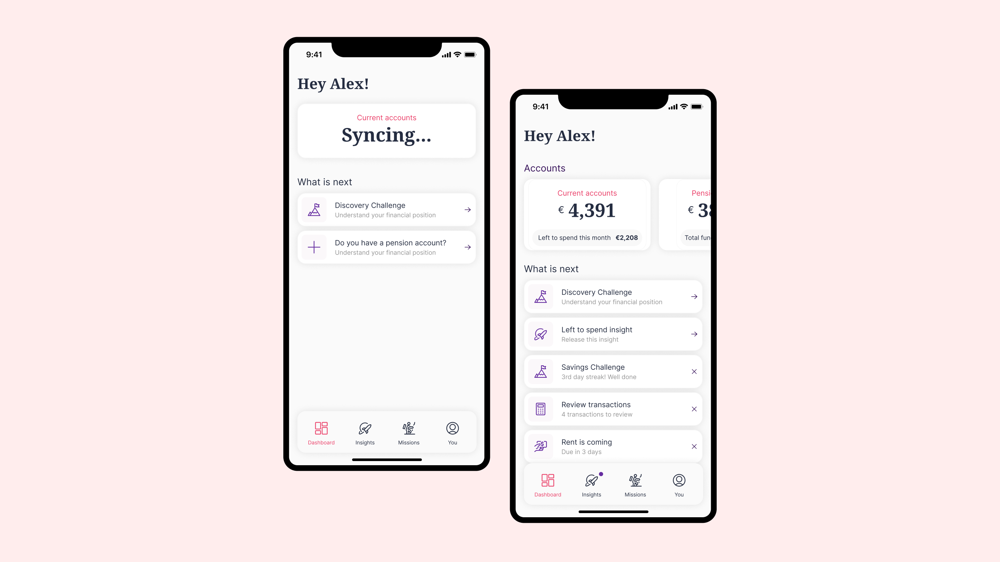
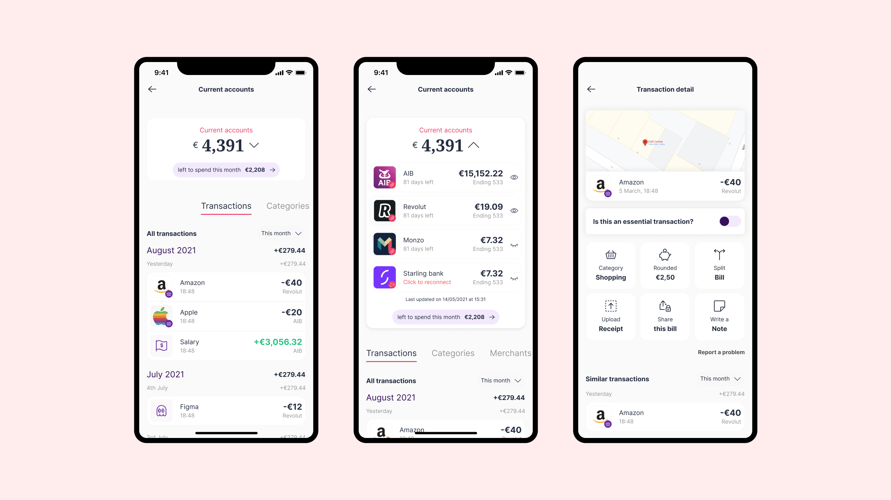
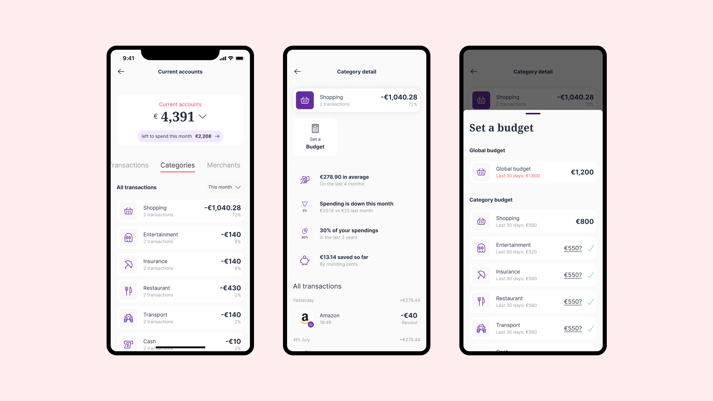

2025
Open Banking
This white label version allowed us to explore and test how open banking could potentially work and evolve over time. On the Dashboard you could take the Discovery Challenge to be ready to get advice or add different types of account. With more information we would be able to show you insights on your finances and guide towards a better financial path.

You could individually check information on a particular bank you added or combine all of them together for a current account overview, here is an example of the information we could retrieve from your bank and how we could potentially bring more flexibility to it.

The categories could have their own insights and be an entry point to set up budgets too.

Over time we had a lot of insights and research on how the open banking we were offering could evolve and how people could benefit from using some of these features. We divided all the features into phases of development and have most of them ready to ship. When building it we also included some room for changes, as different users might need different kinds of visualisation or features.